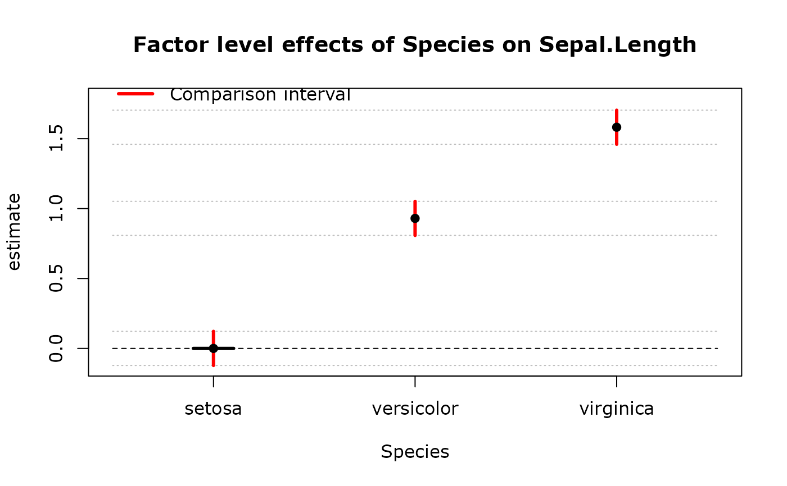

Computes the margin of error for various objects.
Usage
moecalc(
x,
factorname = NULL,
levelnames = NULL,
coef.idx = NULL,
est = NULL,
ci = NULL,
base = TRUE,
basename = "base",
conf.level = 1.96
)Details
If x is a model, must have factorname or coefficient index (coef.idx)
If input factorname, will compute ErrBars by factorname (for given model)
If input coefficient index, will compute ErrBars simply by index only (even they are not factor)
If x is ses.moecalc object, will compute ErrBars simply by given ses.moecalc object
Examples
fit <- lm(Sepal.Length ~ Species, data = iris)
(mc <- moecalc(fit, "Species"))
#> Warning: confidence interval of baseline is 0
#> Est ErrBar compL compU
#> setosa 0.000 0.1218864 -0.1218864 0.1218864
#> versicolor 0.930 0.1218864 0.8081136 1.0518864
#> virginica 1.582 0.1218864 1.4601136 1.7038864
summary(mc)
#> Call:
#> lm(formula = Sepal.Length ~ Species, data = iris)
#>
#> Est ErrBar compL compU confL confU
#> setosa 0.000 0.1218864 -0.1218864 0.1218864 0.0000000 0.000000
#> versicolor 0.930 0.1218864 0.8081136 1.0518864 0.7282025 1.131797
#> virginica 1.582 0.1218864 1.4601136 1.7038864 1.3802025 1.783797
#>
#> Max error betw. approx. and true moe is 0%
plot(mc)
